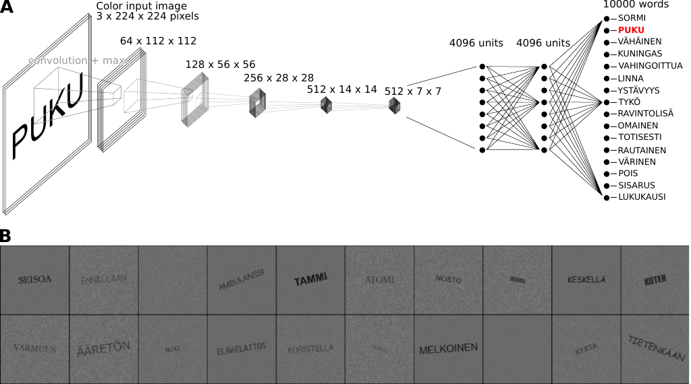

A large-scale computational model to accurately predict early brain activity in response to written words
Marijn van Vliet
Oona Rinkinen
Takao Shimizu
Barry Devereux
Riitta Salmelin
Introduction
What computational operations is the brain performing when it recognizes some splotches of ink on a piece of paper as a meaningful word? This question has been the focus of a large number of neuroimaging studies that examine brain activity during reading. Noninvasive measurement techniques such as electroencephalography (EEG) (Grainger and Holcomb 2009), MEG (Salmelin 2007) and functional magnetic resonance imaging (fMRI) (Price 2012) have provided a wealth of information about when and where changes in activity might be expected during various tasks involving orthographic processing (Carreiras et al. 2014). However, these observations alone are unlikely to lead to a complete understanding of the computations performed by the brain during reading (Poeppel 2012). To develop such an understanding, we need to make these computations explicit, model them, and test and refine the model against the neural signatures observed during imaging studies (Barber and Kutas 2007; Price 2018). In this study, we attempted to model the macro-level computations — that is, the net result of thousands of individual biological neurons working together — that manifest as evoked components in EEG/MEG data. We demonstrate a large-scale model of visual word recognition that enabled us, for the first time, to present to the model the same set of bitmap images that were presented to human volunteers in an earlier study (Vartiainen et al. 2011), and thereby directly compare the activation inside the model with MEG data.
In past decades, several computational models have been created that successfully capture some aspects of visual word recognition. Amongst the first such models, the interactive activation and competition (IAC) model of letter perception, by McClelland and Rumelhart (McClelland and Rumelhart 1981; Rumelhart and McClelland 1982), showed how the interplay of bottom-up and top-down connections results in a system capable of "filling in the blanks" when faced with a partially obscured word. This model was later extended to model semantics as well, showing how the activation of some semantic features ("is alive", "is a bird") leads to the subsequent activation of more semantic features ("can fly", "lays eggs"), in what became known as the parallel distributed processing (PDP) framework (McClelland and Rogers 2003). Note that while these models consist of many interconnected units, those units and their connections do not aim to model a biological connectome, but are an abstract representation of macro-level computations performed by one. Coltheart et al. (2001) pointed out the benefits of explicitly defined connections in their dual-route cascaded (DRC) model of visual word recognition and reading out loud, as they grant the researcher exact control over the macro-level computations. However, as the scope of the models increases, "hand-wiring" the connections in the model becomes increasingly difficult. Therefore, most current models employ back-propagation to learn the connection weights between units based on a large training dataset. Together, PDP and DRC models have been shown to account for many behavioral findings, such as reaction times and recognition errors, in both healthy volunteers and patients (McLeod, Shallice, and Plaut 2000; McClelland and Rogers 2003; Perry, Ziegler, and Zorzi 2007). However, in addition to verifying the eventual output of the model against observed behavior, it would seem informative and important to also verify the intermediate computations by comparing the internal state of the model against recordings of brain activity. Unfortunately, none of these models can produce detailed quantitative data that can be directly compared with neuroimaging data, leaving researchers to focus on finding indirect evidence that the same macro-level computations occur in both the model and the brain, with varying levels of success (Jobard, Crivello, and Tzourio-Mazoyer 2003; Protopapas et al. 2016; Barber and Kutas 2007).
More recently, progress has been made towards models whose internal state can be more easily compared with data obtained in neuroimaging studies. Laszlo and Plaut (2012) took an important step by creating a PDP-style model of visual word recognition that performs the computations required to translate a collection of letters (e.g., DOG) into an abstract semantic representation of a concept (e.g., a furry animal that barks), while producing an EEG-like signal (Laszlo and Armstrong 2014). By summing the activity of the computational units in specific layers of the model, the resulting time-varying signal resembles a well-known signal component, observed in EEG and MEG studies, referred to as the N400 potential (Kutas and Federmeier 2011). However, while this model produces a neuroimaging-like signal, it still cannot be numerically compared with real neuroimaging data, since the simulated environment in the model is extremely simplified (e.g. it operates exclusively on 3-letter words), whereas the brain data will, by nature, reflect the reading process in more varied and realistic visual settings.
In addition to using a small and restricted vocabulary, another striking simplification made in both PDP-based and DRC models is in how the initial visual input is presented to the model. The models make use of "letter banks", where each letter of a written word is encoded in as separate group of inputs. The letters themselves are encoded as either a collection of 16 predefined line segments (McClelland and Rumelhart 1981) or a binary code indicating the letter (Laszlo and Plaut 2012). This rather high level of visual representation sidesteps having to deal with issues such as visual noise, letters with different scales, rotations and fonts, segmentation of the individual letters, and so on. However, in studies of brain activity, these processes are thought to contribute a major part to the activity observed during the first 200 ms in EEG/MEG studies of visual word recognition (Salmelin 2007; Grainger and Holcomb 2009; Tarkiainen et al. 1999; Petit et al. 2006; Pammer et al. 2004), and to the activity observed in the primary visual cortex and visual word form area (VWFA) through fMRI (Vinckier et al. 2007; Cohen and Dehaene 2004).
Recent advances in deep learning and its software ecosystem are rapidly changing our notion of what is computationally tractable to model (Richards et al. 2019; LeCun, Bengio, and Hinton 2015). convolutional neural networks (CNNs) have emerged that perform scale- and rotation-invariant visual object recognition at very high levels of accuracy (Krizhevsky, Sutskever, and Hinton 2017; Simonyan and Zisserman 2015; Dai et al. 2021). Furthermore, they model some functions of the visual cortex well enough that a direct comparison between network state and neuroimaging data has become possible (Schrimpf et al. 2018; Devereux, Clarke, and Tyler 2018; Yamins and DiCarlo 2016). Consequently, our understanding of basic visual processing in the brain has increased tremendously (Lindsay 2020). Since the first stages of reading, namely visual word recognition, can be seen as a specialized form of object recognition, CNNs may very well be a suitable tool for increasing the scale of traditional connectionist models of reading, allowing for a much more realistic modeling of the early orthographic processing steps than what has been possible so far. Indeed, earlier work has established that a CNN can form internal letter representations (Testolin, Stoianov, and Zorzi 2017) and can be coerced into forming a VWFA-like region on top of an existing visual system (Hannagan et al. 2021). In this study, we investigated whether a CNN can produce a signal that can be directly compared to neuroimaging data, in this case MEG, during a single-word reading task.
We trained a vgg-11 network (Simonyan and Zisserman 2015) to recognize 10 000 different Finnish words. Next, we ran through the model a set of stimuli that had been used in an earlier MEG study on human volunteers (Vartiainen et al. 2011). These stimuli consisted of valid Finnish words, pseudowords and consonant strings, and two stimulus types that traditional PDP and DRC models cannot handle, namely letter-like symbol strings, and words embedded in visual noise. We demonstrate that various layers in the model behave similarly to several well-studied evoked responses and evaluate this similarity both qualitatively and numerically.
Results
The brain
For this study, we reused MEG data that was collected as part of a study by Vartiainen et al. (2011). During the recording session, 15 participants were presented with 560 orthographic stimuli in a silent reading task (Figure 1A). The stimuli were designed to form a series of experimental contrasts that highlight three processing stages during single word reading: early visual processing, letter shape detection and lexical access.
To summarize the high-dimensional MEG data, the sensor-level signals were segregated into cortical-level spatiotemporal components through guided equivalent current dipole (ECD) modeling (Hansen, Kringelbach, and Salmelin 2010). The resulting ECDs were grouped based on their location and the timing of peak signal strength. The current study re-uses three of such ECD groups defined in the original study (Vartiainen et al. 2011) along the ventral stream (Figure 1B). Together, the grand-average time courses of signal strength at these ECD groups (Figure 1C) capture the different processing stages that the original study sought to highlight.
Figure 1: Summary of the meg results obtained by Vartiainen et al. (2011). A: Examples of stimuli used in the MEG experiment. Each stimulus contained 7–8 letters or symbols. B: Source estimate of the evoked MEG activity, using MNE-dSPM. The grand-average activity to word stimuli, averaged for three time intervals, is shown in orange hues. For each time interval, white circles indicate the location of the most representative left-hemisphere ECD for each participant, as determined by Vartiainen et al. (2011). C: Grand-average time course of signal strength for each group of ECDs in response to the different stimulus types. The traces are color-coded to indicate the stimulus type as shown in A.
The first group of ECDs is occipitally located and represents early onset activity in the visual cortex, peaking at 65–115 ms after the stimulus onset. The signal strength at these ECDs is driven by the visual complexity of the stimulus and is characterized in this study by a large response to noise-embedded words relative to all other stimulus types. Following Tarkiainen et al. (1999), we will refer to this effect as the Type I response.
The second group is located further along the fusiform gyrus, with the signal strength peaking slightly later at 140–200 ms. ECDs belonging to this group exhibit sensitivity to whether the stimulus contains letters that are part of the participant’s native alphabet (Tarkiainen et al. 1999), and is characterized in this study by a smaller response to stimuli containing symbol strings relative to stimuli that contain letters. Note that, in contrast to the Type I response, adding noise to the stimulus decreases the signal for these ECDs, further indicating that the underlying cognitive computations are more selective towards specific visual features. Following Tarkiainen et al. (1999), we will refer to this as the Type II response. The Type II response is located in the same general cortical region as the VWFA reported using fMRI (Cohen and Dehaene 2004), but they are not spatially or functionally identical (Vartiainen et al. 2011).
The third and final ECD group is located in the temporal cortex, peaking much later at 300–500 ms. Its signal strength is modulated by the lexical content of the stimulus, manifested in this study as a larger response to the word-like (i.e., words and pseudowords) versus the non-word-like stimuli. The location and response pattern of this ECD group corresponds to that of the N400m (Halgren et al. 2002; Helenius et al. 1998; Service et al. 2007; Salmelin 2007).
The model
As a model of the computations underlying the brain activity observed during the MEG experiment, we used a vgg-11 (Szegedy et al. 2015) network architecture, pretrained on ImageNet (Russakovsky et al. 2015). This architecture consists of five convolution layers (three of which perform convolution twice), followed by two densely connected layers, terminating in an output layer (Figure 2A). The model was trained to perform visual word recognition using a training set that contained 1 000 000 images containing a word, rendered in varying fonts, sizes and rotations, with varying degrees of visual background noise (Figure 2B). The vocabulary size (10 000) was chosen to exceed the number of units in the densely connected layers (4 096), forcing the model to construct a sub-lexical representation. To add a detection element to what is otherwise a discrimination task, an additional 50 000 images containing only noise were added to the training set. The task for the model was to identify the correct word (regardless of the font, size and rotation used to render the text) by setting the corresponding unit in the output layer to a high value. If no word was present in the image, all output units should have a low value. This was achived be replacing the output layer of the pre-trained model with one containing 10 001 randomly initialized units for word recognition training, were the final unit was trained to denote the "no word present" condition, and removing this final unit after training was complete. During training, the performance of the model was evaluated on an independent test set of 100 000 images that contained words and 5 000 that contained only noise. Training was stopped when the model’s performance plateaued, at which point the accuracy on the test set was 99.3 %.
Figure 2: Overview of the proposed computational model of visual word recognition in the brain. A: The vgg-11 model architecture, consisting of five convolution layers, two fully connected layers and one output layer. B: Examples of the images used to train the model.
After training, the model was used to classify the stimulus images presented during the MEG experiment (see Supplementary Table 1). The model classified 114 of the 118 word stimuli correctly (accuracy 96.6 %). The 5 incorrectly classified stimuli were classified as close orthographic neighbors (e.g. LUOMINEN→TUOMINEN). All noise-embedded words were misclassified, since the amount of noise made them unrecognizable, with 99 out of 118 being classified as the word METSÄTEOLLISUUS, which is one of the words in the training set with the highest visual complexity. Since the model was only trained to detect and discriminate between words, all non-word stimuli (pseudowords, consonant strings, symbol strings) were misclassified as well. In this case, it was more difficult to find a pattern in the way they were classified. In many cases, similarity in letter shape seemed to play a role (e.g. SKKNTMT→SUKUNIMI, ÄHKÄÄJÄ→VARAAJA), but not always (e.g. INKRIHTI→EMOLEVY).
Figure 3: Contribution maps
For each type of stimulus (words, pseudowords, consonants, symbols and noise embedded words), Deeplift contribution maps are shown for five exemplars. For each exemplar, the original word in the stimulus is given, followed by the word corresponding to the node in the output layer that was activated the strongest (i.e., the model prediction). The maps indicate the amount of influence each pixel has on this output node (red=positive, blue=negative, in arbitrary units).
To better understand what kind of visual features the model used to determine the output word, we performed Deeplift (Shrikumar, Greenside, and Kundaje 2019) analysis to determine the contribution of each input pixel to the strongest activated output node (Figure 3). We observed similar contribution patterns for each individual letter, no matter its location in the string, indicating that the model learned to use individual letter shapes as building blocks.
Comparing model and brain
To directly compare layer activations in the model with the brain responses in word reading (Figure 4), we collected summary statistics, here referred to as "response patterns", for the ECD time courses, MNE-dSPM source estimates, and the rectified linear unit (ReLu) activations in the model. For each ECD, the response pattern was obtained by integrating the signal strength in response to each stimulus over the time window used in Vartiainen et al. (2011) for statistical analysis, followed by a z-transformation (Figure 4A). The single-participant response patterns were then averaged to obtain the grand-average response patterns per stimulus. For the model, response patterns were obtained for each layer, by computing the mean ReLu activation across all the units in the layer in response to each stimulus, followed by a z-transformation (Figure 4B). Finally, response patterns were obtained for each source/time point in the grand-average MNE-dSPM source estimates by computing the magnitude of the estimated signal at that point (Figure 4C).
Since the same individual stimuli were processed by both the model and the brain, we can measure the model-brain correspondence qualitatively by examining the overall shape of the response patterns, and quantitatively by computing the correlation between them (Figure 4, Table 1). Note that, in addition to real words with and without noise and pseudowords, the stimuli also included consonant and symbol strings, which the model was not trained to recognize.
Figure 4: Grand-average comparison between brain and model. Based on the response patterns to each stimulus type, three processing stages were identified that correspond to different time windows in the MEG activity and different layer types in the model. A: Grand-average response patterns obtained from evoked MEG activity, quantified using three ECD groups. For each stimulus, the ECD time courses were integrated over the indicated time interval. B: Response patterns obtained from the model. For each layer, the mean ReLu activation in response to each stimulus. Matching response patterns between ECDs and model layers are shown using black lines, accompanied by the corresponding Pearson correlations. Two additional correlation values are shown in gray, for which the response patterns do not match, but which are discussed in the main text. C: Pearson correlation between the model and the MNE-dSPM source estimate. Grand-average source estimates were obtained in response to each stimulus. The correlation map was obtained by correlating the activity at each source point with that for each layer of the model. The correlation map is shown at the time of peak correlation (using the same analysis window as in A). Only positive correlations are shown.
Table 1: Single-participant comparison between brain and model. Shown are the average Pearson correlations between the single-participant ECD response patterns and the response patterns for each layer of the model.
Layer
Type
Type I
Type II
N400m
1
Convolution
0.33*
-0.15
-0.13***
2
Convolution
0.33*
-0.15
-0.13***
3
Convolution
0.32*
-0.15
-0.12***
4
Convolution
0.25*
-0.10
-0.08***
5
Convolution
0.29*
-0.11
-0.08***
6
Fully connected
-0.13*
0.12**
0.14***
7
Fully connected
-0.22*
0.15*
0.15***
8
Output
-0.26*
0.15*
0.16***
p < 0.05 **p < 0.01 ***p < 0.001 linear mixed effects (LME) model, false discovery rate (FDR) corrected
In the first three convolution layers of the model, we see a much larger response to the noise-embedded word stimuli, relative to the other stimulus types. This is likely driven by the much higher visual complexity of the noisy stimuli. This corresponds well to the Type I response pattern, i.e. high response to noisy words and no distinction among the other stimulus types (correlations between grand-average patterns: 0.79/0.79/0.76, average single-participant correlations: 0.33/0.33/0.32 [p < 0.05]).
We see a change in the response pattern of the model in the next two convolution layers, layers 4 and 5. In these layers, the ReLu activation for symbol strings is now lower than that for the other stimulus types. This indicates the presence of convolution filters that are sensitive to the specific line arrangements that are found in letters of the Finnish alphabet, but not present in the symbol strings. In this regard, the response pattern of these layers is similar to the Type II response pattern. However, many of the filters remain sensitive to noise, which does not match the Type II response pattern, resulting in a negative correlation (correlations between grand-average patterns: -0.30/-0.34, average single-participant correlations: -0.10/-0.11 [n.s.]). Overall, the response patterns of layers 4 and 5 correlate best with the Type I response pattern, although they are not strictly consistent (correlations between grand-average patterns: 0.60/0.69, averaged single-trial correlations: 0.25/0.29 [p < 0.05]).
The selectivity for letter shapes becomes more pronounced in the two fully connected layers of the model. In these layers, we see an increase in ReLu activation for stimuli containing letter shapes, and a decrease in activation for noise-embedded words. However, no distinction is made between consonant strings and word-like stimuli, indicating that letters are detected in isolation. This means the response patterns of these layers are consistent with the Type II response pattern (correlations with grand-average: 0.39/0.47, averaged subject-subject correlations: 0.12 [p < 0.01], 0.15 [p < 0.05]), and is consistent with the Type II response.
Finally, at the output layer of the model, we observe that word-like stimuli produce more activity than consonant strings, indicating that the shapes of multiple letters are combined to produce the output. It is noteworthy that pseudowords, which were not present in the training set, produce a roughly equal amount of activation in the output layer as valid Finnish words. This means that the response pattern of the output layer corresponds best to that of the third ECD group in the temporal cortex (correlation with grand-average: 0.44, average subject-subject correlation: 0.16 [p < 0.001]), and is consistent with the N400m response (Salmelin 2007).
To verify that the three ECD groups capture the most important correlations between the brain activity and the model, we compared the model to cortex-wide MNE-dSPM source estimates (Figure 4C). For each layer in the model, the areas with maximum correlation appear around the locations of the ECDs and at a time that is close to the peak activation of the ECDs.
Discussion
In this study, we built a model of visual word recognition that operates on the raw pixel values of a bitmap image, rather than the more abstract representations found in many earlier models (McClelland and Rumelhart 1981; Coltheart et al. 2001; Laszlo and Armstrong 2014). Such a model can be tested with a wider variety of visual stimuli than traditional models, including a more naturalistic range of fonts, sizes, rotations, as well as non-letter stimuli such as visual noise and symbol strings. Furthermore, the deep-learning architecture scales to encompass a vocabulary with the same order of magnitude as a human’s, enabling it to be tested meaningfully with pseudowords. The combination of all of this means that the model is able to operate on identical stimuli as those commonly used in neuroimaging studies of reading, and is able to perform the same task as the volunteer, with comparable accuracy and robustness against irrelevant visual detail. This bridges an important gap between modeling and experimental efforts in this domain, namely the ability to evaluate a model by its numerical fit to neuroimaging data.
Our model aims to provide a good fit to the brain activity observed during the first 400 ms after stimulus onset. Specifically, the mean ReLu activity in the layers of the model provides a good explanation of the responses of three important evoked components that are observed during MEG studies of word recognition (Salmelin 2007). Specifically, we observed that the convolution layers respond more to noise embedded words than the stimuli without noise, which mimics the Type I response that is observed around 64–115 ms in the visual cortex. Next, two fully connected layers responded more to valid Finnish letters than letter-like symbol strings, which mimics the Type II response that is observed around 140–200 ms occipital-temporally in the brain (Tarkiainen et al. 1999). Finally, the output layer responded more to words and pseudo-words than consonant strings, which mimics the N400m response that is observed around 300–500 ms in the temporal cortex (Halgren et al. 2002; Helenius et al. 1998; Service et al. 2007; Salmelin 2007). The progression of the signal through the layers in the model tracks the dynamics of the MEG data, with earlier layers matching with earlier time points.
The model uses a conventional CNN architecture that is similar to architectures that have previously been shown to describe the initial stages of visual object recognition (Schrimpf et al. 2018; Devereux, Clarke, and Tyler 2018; Yamins and DiCarlo 2016). No changes to the vgg-11 architecture (Simonyan and Zisserman 2015) were needed to create a successful model. Using an approach that somewhat mimics how humans build an orthographic system on top of their existing visual system when they learn how to read (Vinckier et al. 2007; Cohen and Dehaene 2004), we started with a model that was pre-trained to perform visual object recognition on ImageNet, and then further trained it using bitmap images of written words. The resulting model learned to recognize letter shapes and combine them into one of 10 000 possible words.
During training, the learning algorithm was required to adapt the existing visual network into a model of visual word recognition. This is in line with the observation that proficiency with written language has developed too recently in our history for any evolutionary changes in brain connectivity to support this skill to have occurred. Instead, acquisition of rapid visual word recognition likely relies on a reconfiguration of parts of an existing visual network (Dehaene-Lambertz, Monzalvo, and Dehaene 2018).
Comparing unit activations in a CNN to MEG data means comparing two high-dimensional datasets, for which a mapping from one unto the other needs to be created. In other studies, this was often achieved through information-based techniques such as representational similarity analysis (RSA) or pattern-based techniques such as multivariate regression. Such methods allow for a lot of flexibility in how the model maps onto the brain signal. However, this flexibility is ultimately undesired when we strive for a more complete understanding of how computational processes in the brain manifest in the signal recorded by the scanner. In this study, we were able to make the mapping between the model and brain activity explicit enough to enable a rigid univariate comparison.
Limitations of the current model
The vgg-11 architecture was originally designed to achieve high image classification accuracy on the ImageNet challenge (Simonyan and Zisserman 2015). As a model of brain function to explain neuroimaging data during reading, it is still incomplete in many ways. As neuroimaging experiments of language started by mapping responses to basic visual and auditory stimuli, so does the modeling effort start with an implementation of only the most basic principles.
One important limitation of the current model is the lack of an explicit mapping from the units inside its layers to specific locations in the brain at specific times. Multiple layers have a maximum correlation with the source estimate at the exact same location and time (Figure 4C). Furthermore, there is no clear relationship between the number of layers the signal needs to traverse in the model to the processing time in the brain. The signal needs to propagate through five convolution layers to reach the point where it matches the Type II response at 140–200 ms, but only through two additional layers to reach the point where it matches the N400m response at 300–500 ms. There are network architectures like cornet-s (Kubilius et al. 2019) that aim for an explicit mapping between layers in the model and the V1-V4 areas of the visual cortex, although the first layer of the model should probably be mapped onto the retina, rather than V1 (Lindsey et al. 2019).
As for all models that rely on machine learning to set millions of parameters, it’s not always straightforward to understand what exact computations the model itself is performing. In this study, we used Deeplift contribution maps to gain some insight into this (Figure 3), and others have explored this issue more deeply in the specific context of CNNs that perform visual word recognition (Testolin, Stoianov, and Zorzi 2017; Hannagan et al. 2021).
Furthermore, the scope of the current model is limited to a bottom-up processing stream that starts from the initial pixel input up to recognition of a single orthographic word-form up until right before the formation of any abstract semantic representations. However, there is some basis for an extension of the model into the semantic domain, as there is a growing body of literature exploring how to learn suitable representations from text corpora (Günther, Rinaldi, and Marelli 2019; Mikolov et al. 2013; Pennington, Socher, and Manning 2014) and how to combine multiple words into sentence representations (Brown et al. 2020; Devlin et al. 2019).
Conclusion
Despite its limitations, our model is an important milestone for computational implementations of cognitive theories of language on the level of the brain. The ability to directly compare a model with neuroimaging results greatly facilitates empirical verifiability of such theories. Our model is a powerful platform for future extensions that implement more accurate, detailed and complete theories, where the merit of such extensions can be evaluated based on the improvement of the fit to the data.
Methods
MEG study design and data analysis
The MEG data was collected by Vartiainen et al. (2011), and was re-analyzed for the current study using MNE-python (Gramfort et al. 2013) and FreeSurfer (Dale, Fischl, and Sereno 1999). We refer to the original publication for additional details on the study protocol and data collection process.
Simultaneous MEG and EEG was recorded from 15 participants (who gave their informed consent, in agreement with the prior approval of the Ethics Committee of the Helsinki and Uusimaa Hospital District). The stimuli consisted of visually presented Finnish words, pseudowords (pronounceable but meaningless), consonant strings (random consonants), symbol strings (randomly selected from 10 possible shapes), and words embedded in high-frequency visual noise (Figure 1A). Each stimulus category contained 112 different stimuli and each stimulus contained 7–8 letters/symbols. The stimuli were presented sequentially in a block design. Each block started with a random period of rest (0–600 ms), followed by 7 stimuli of the same category. Each stimulus was shown for 300 ms with an inter-stimulus interval of 1500 ms of gray background. In addition to the five stimulus conditions (16 blocks each), there were 16 blocks of rest (12 s) An additional 5 target blocks were added, in wich one stimulus appeared twice in a row, that the participants were asked to detect and respond with a button press. The target blocks were not included in the analysis. The same paradigm was applied in an fMRI-EEG recording of the same participants as well (data not used here).
The data were recorded with a Vector View device (Elekta Neuromag, now MEGIN Oy, Finland) in a magnetically shielded room. In addition vertical and horizontal electro-oculography (EOG) were recorded. The signals were bandpass filtered at 0.03–200 Hz and digitized at 600 Hz. For analysis, the data were further processed using the maxfilter software (MEGIN Oy, Finland) and bandpass filtered at 0.1–40 Hz. Eye-movement and heart-beat artifacts were reduced using independent component analysis (ICA): the signal was highpassed at 1 Hz, and components with correlations larger than 5 standard deviations with any of the EOG channels or an estimated electro-cardiogram (based on the magnetometers without the maxfilter applied) were removed (3–7 out of 86–108 components). Epochs were cut −200–1000 ms relative to the onset of the stimulus and baseline-corrected using the pre-stimulus interval. Participant-specific noise covariance matrices of the MEG sensors were estimated using the pre-stimulus interval.
For ECD and MNE-dSPM source estimation, 3-layer boundary element method (BEM) forward models were used. These models were based on T1-weighted anatomical images that were acquired using a 3 T Signa excitemagnetic resonance imaging (MRI) scanner. FreeSurfer (Dale, Fischl, and Sereno 1999) was used to obtain the surface reconstructions required to compute the BEM models. Vartiainen et al. (2011) defines three groups of ECDs in the left-hemisphere, associated with the Type I, Type II and N400m responses. The locations and orientations of the ECDs in these groups were re-used in the current study. For each individual epoch, the signal at each of the three ECDs and a cortex-wide MNE-dSPM source estimate was computed using the noise covariance matrices and BEM forward models. Finally, the locations of the ECDs and MNE-dSPM source points were morphed to a template brain (FreeSurfer’s fsaverage brain).
Model
The computational model has a vgg-11 architecture (Simonyan and Zisserman 2015) as defined in the TorchVision (Marcel and Rodriguez 2010) module of the PyTorch (Paszke et al. 2019) (Figure 2A). The architecture specifies 5 convolution layers, with the final 3 performing convolution twice. Each individual convolution step is followed by batch-normalization (Ioffe and Szegedy 2015) and ReLu activation, and max-pooling is performed as final step of each layer. The 5 convolution layers are followed by 2 followed by 2 linear fully-connected layers, with ReLu activation, and employing 50 % dropout. The final output layer is also a linear, fully-connected layer with ReLu activation.
The model parameters for all layers, except the output layer, were initialized to the ImageNet pre-trained model provided by TorchVision. Then, the model was trained using 1 000 000 bitmap images of rendered text on a background of visual noise, and 500 000 bitmap images containing only visual noise (Figure 2B). An independent test set containing 100 000 images of text and 50 000 images of only noise was used to track the performance of the model during training. None of the images in the training or test set were an exact duplicate of the images used as stimuli in the MEG experiment. Therefore, the stimulus set can be treated as an independent validation set.
The text on the images were one of 10 000 Finnish words. The list of words was compiled using the 112 words used in the MEG, extended with the most frequently used Finnish words, as determined by Kanerva et al. (2014), excluding proper names and using their lemma form. Words had a minimum length of 2 letters, and no preset maximum length. A training image was assembled by overlaying text onto an image of visual noise. Visual noise was rendered by randomly selecting a gray-scale value (0–100 %) for each pixel. Next, if the training image contained text, the word was rendered in uppercase letters, using a randomly chosen font (15 possible fonts), font size (14–32 pt), and rotation (-20° to 20°). The list of fonts consisted of: Ubuntu Mono, Courier, Luxi Mono Regular, Lucida Console, Lekton, Dejavu Sans Mono, Times New Roman, Arial, Arial Black, Verdana, Comic Sans MS, Georgia, Liberation Serif, Impact, and Roboto Condensed. The text and the visual noise were mixed at a ratio dictated by a randomly selected noise level (10–30 %) by adjusting their respective opacities to add up to 100 %. For example, at a noise level of 20 %, first the visual noise was rendered at 20 % opacity, then the text was overlayed at 100 − 20 = 80 % opacity. 0 When the input image did not contain a word, all model outputs should be low, which was achieved by adding a unit to the output layer to indicate this condition. The training objective was to minimize the cross-entropy loss between the model output and a one-hot encoded vector of length 10 001, indicating the target word or the no-word condition. After training, the extra unit was removed from the model and a ReLu activation was placed on the remaining units. Training was performed using stochastic gradient descend with an initial learning rate of 0.001, which was reduced to 0.0001 after 10 epochs (an "epoch" in this context refers to one sequence of all 1 500 000 training images). In total, training was performed for 20 epochs, by which point the performance on the test set had plateaued at 99.6 %.
Comparison between model and MEG data
To compare the model and MEG, statistical summaries were made of the high-dimensional datasets, such that Pearson correlations could be computed between them. We will refer to these summaries as "activity scores".
After training, the model was applied to the bitmap images that were used during the MEG experiment (padding them to be 256 × 256 pixels with 50 % greyscale pixels). The activity at each layer of the model was quantified by recording the ReLu activation right before the maxpool operation, and computing the mean across the units. This yielded for each stimulus image, a single number for each layer in the model representing the amount of activity within that layer. For each layer, the activity scores were z-scored (subtract the mean, divide by the standard deviation) across the stimulus images (Figure 4B).
The activity of each ECD was quantified by taking the mean of the ECD’s timecourse (Figure 1C) during the time window used in Vartiainen et al. (2011). This yielded, for each stimulus image, a single number for each ECD for each participant, indicating the amount of signal at the ECD. These activity scores were first z-scored across the stimulus images independently for each participant. The ECDs are participant specific. Vartiainen et al. (2011) clustered the ECDs into groups using their location and timing, where the ECDs in each group were judged to encode the same evoked component in different participants. Three groups were selected as representing the Type I, Type II and N400m responses typically found in the literature (Salmelin 2007). The groups do not necessarily contain an ECD for each of the 15 participants, as some participants did not have an ECD to contribute that matched well enough in position and/or timing. The number of participants contributing an ECD to each group were: Type I-14, Type II-14, and N400m-15. During the grand-average analysis, the activity score of the ECDs was averaged within each group (Figure 4A).
The MNE-dSPM source estimates used 4000 source points, distributed evenly across the cortex. The activity score at each source point was computed by taking the maximum signal value of the source point’s timecourse within the same time window as the ECD analysis. This yielded for each stimulus image, a single number for each source point for each participant, indicating the amount of signal at the source point (Figure 1C). These activity scores were first z-scored across the stimulus images independently for each participant. Then, during the grand-average analysis, the scores were averaged across participants.
In the grand-average comparison, Pearson correlations were computed between the activity scores of each layer in the model versus each group of ECDs (annotated in Figure 4B) and each MNE-dSPM source point (Figure 4C). In the single-participant comparison, a separate LME model was fitted for each layer in the model versus each group of ECDs, using participants as random effect (random intercept + random slope). The lme4 (Bates et al. 2015) R-package implements the LME model and lmeTest (Kuznetsova, Brockhoff, and Christensen 2015) was used to estimate p-values.
Data availability
The trained model and MEG data necessary for performing the comparison is available at https://osf.io/nu2ep. As the consent obtained from the participants prohibits sharing of private data, the MEG data that is made available has been processed to such a degree that participant anonymity can be safeguarded. The code for training the model and reproducing the results of this paper is available at https://github.com/wmvanvliet/viswordrec-baseline.
Acknowledgements
We acknowledge the computational resources provided by the Aalto Science-IT project. This research was funded by the Academy of Finland (grants #310988 and #343385 to M.v.V, #315553 to R.S.) and the Sigrid Jesélius Foundation (to R.S.).
References
Barber, Horacio A., and Marta Kutas. 2007. “Interplay between computational models and cognitive electrophysiology in visual word recognition.”Brain Res. Rev. 53 (1): 98–123. https://doi.org/10.1016/j.brainresrev.2006.07.002.
Bates, Douglas M., Martin Maechler, Benjamin M Bolker, and Steven Walker. 2015. “Fitting Linear Mixed-Effects Models Using Lme4.”Journal Of Statistical Software 67 (1): 1–48. https://doi.org/10.18637/jss.v067.i01.
Brown, Tom B., Benjamin Mann, Nick Ryder, Melanie Subbiah, Jared Kaplan, Prafulla Dhariwal, Arvind Neelakantan, et al. 2020. “Language Models Are Few-Shot Learners.”arXiv:2005.14165 [Cs]. https://arxiv.org/abs/2005.14165.
Carreiras, Manuel, Blair C. Armstrong, Manuel Perea, and Ram Frost. 2014. “The What, When, Where, and How of Visual Word Recognition.”Trends in Cognitive Sciences 18 (2): 90–98. https://doi.org/10.1016/j.tics.2013.11.005.
Cohen, Laurent, and Stanislas Dehaene. 2004. “Specialization Within the Ventral Stream: The Case for the Visual Word Form Area.”NeuroImage 22 (1): 466–76. https://doi.org/10.1016/j.neuroimage.2003.12.049.
Coltheart, M, K Rastle, Conrad Perry, R Langdon, and J Ziegler. 2001. “DRC: A Dual Route Cascaded Model of Visual Word Recognition and Reading Aloud.”Psychological Review 108 (1): 204–56. https://doi.org/10.1037/0033-295X.108.1.204.
Dai, Zihang, Hanxiao Liu, Quoc V. Le, and Mingxing Tan. 2021. “CoAtNet: Marrying Convolution and Attention for All Data Sizes.”arXiv:2106.04803 [Cs]. https://arxiv.org/abs/2106.04803.
Dale, Anders M., Bruce R. Fischl, and Martin I. Sereno. 1999. “Cortical Surface-Based Analysis: I. Segmentation and Surface Reconstruction.”NeuroImage 9 (2): 179–94.
Dehaene-Lambertz, Ghislaine, Karla Monzalvo, and Stanislas Dehaene. 2018. “The Emergence of the Visual Word Form: Longitudinal Evolution of Category-Specific Ventral Visual Areas During Reading Acquisition.”PLOS Biology 16 (3): e2004103. https://doi.org/10.1371/journal.pbio.2004103.
Devereux, Barry J., Alex Clarke, and Lorraine K. Tyler. 2018. “Integrated Deep Visual and Semantic Attractor Neural Networks Predict fMRI Pattern-Information Along the Ventral Object Processing Pathway.”Scientific Reports 8 (1). https://doi.org/10.1038/s41598-018-28865-1.
Devlin, Jacob, Ming-Wei Chang, Kenton Lee, and Kristina Toutanova. 2019. “BERT: Pre-Training of Deep Bidirectional Transformers for Language Understanding.”arXiv:1810.04805 [Cs]. https://arxiv.org/abs/1810.04805.
Grainger, Jonathan, and Phillip J. Holcomb. 2009. “Watching the Word Go by: On the Time-Course of Component Processes in Visual Word Recognition.”Linguistics and Language Compass 3 (1): 128–56. https://doi.org/10.1111/j.1749-818X.2008.00121.x.
Gramfort, Alexandre, Martin Luessi, Eric Larson, Denis A. Engemann, Daniel Strohmeier, Christian Brodbeck, Roman Goj, et al. 2013. “MEG and EEG Data Analysis with MNE-Python.”Frontiers in Neuroscience 7 (December): 1–13. https://doi.org/10.3389/fnins.2013.00267.
Günther, Fritz, Luca Rinaldi, and Marco Marelli. 2019. “Vector-Space Models of Semantic Representation from a Cognitive Perspective: A Discussion of Common Misconceptions.”Perspectives on Psychological Science 14 (6): 1006–33. https://doi.org/10.1177/1745691619861372.
Halgren, Eric, Rupali P. Dhond, Natalie Christensen, Cyma Van Petten, Ksenija Marinkovic, Jeffrey D. Lewine, and Anders M. Dale. 2002. “N400-Like Magnetoencephalography Responses Modulated by Semantic Context, Word Frequency, and Lexical Class in Sentences.”NeuroImage 17 (3): 1101–16. https://doi.org/10.1006/nimg.2002.1268.
Hannagan, T., A. Agrawal, L. Cohen, and S. Dehaene. 2021. “Emergence of a Compositional Neural Code for Written Words: Recycling of a Convolutional Neural Network for Reading.”Proceedings of the National Academy of Sciences 118 (46). https://doi.org/10.1073/pnas.2104779118.
Helenius, P., R. Salmelin, E. Service, and J. F. Connolly. 1998. “Distinct Time Courses of Word and Context Comprehension in the Left Temporal Cortex.”Brain 121 (6): 1133–42. https://doi.org/10.1093/brain/121.6.1133.
Ioffe, Sergey, and Christian Szegedy. 2015. “Batch Normalization: Accelerating Deep Network Training by Reducing Internal Covariate Shift.” In Proceedings of the 32nd International Conference on International Conference on Machine Learning - Volume 37, 448–56. ICML’15. JMLR.org.
Jobard, G, F Crivello, and N Tzourio-Mazoyer. 2003. “Evaluation of the Dual Route Theory of Reading: A Metanalysis of 35 Neuroimaging Studies.”NeuroImage 20 (2): 693–712. https://doi.org/10.1016/S1053-8119(03)00343-4.
Kanerva, Jenna, Juhani Luotolahti, Veronika Laippala, and Filip Ginter. 2014. “Syntactic N-gram Collection from a Large-Scale Corpus of Internet Finnish.”Frontiers in Artificial Intelligence and Applications 268: 184–91. https://doi.org/10.3233/978-1-61499-442-8-184.
Krizhevsky, Alex, Ilya Sutskever, and Geoffrey E. Hinton. 2017. “ImageNet Classification with Deep Convolutional Neural Networks.”Communications of the ACM 60 (6): 84–90. https://doi.org/10.1145/3065386.
Kubilius, Jonas, Martin Schrimpf, Kohitij Kar, Rishi Rajalingham, Ha Hong, Najib Majaj, Elias Issa, et al. 2019. “Brain-Like Object Recognition with High-Performing Shallow Recurrent ANNs.” In Advances in Neural Information Processing Systems. Vol. 32. Curran Associates, Inc.
Kutas, Marta, and Kara D. Federmeier. 2011. “Thirty years and counting: Finding meaning in the N400 component of the event related brain potential (ERP).”Annu. Rev. Psychol. 62 (January): 621. https://doi.org/10.1146/annurev.psych.093008.131123.
Kuznetsova, A., P. B. Brockhoff, and R. H. B. Christensen. 2015. “LmerTest: Tests for Random and Fixed Effects for Linear Mixed Effect Models. R Package, Version 2.0-29.”
Laszlo, Sarah, and Blair C. Armstrong. 2014. “PSPs and ERPs: Applying the dynamics of post-synaptic potentials to individual units in simulation of temporally extended Event-Related Potential reading data.”Brain Lang. 132: 22–27. https://doi.org/10.1016/j.bandl.2014.03.002.
Laszlo, Sarah, and David C. Plaut. 2012. “A neurally plausible Parallel Distributed Processing model of Event-Related Potential word reading data.”Brain and Language 120 (3): 271–81. https://doi.org/10.1016/j.bandl.2011.09.001.
Lindsay, Grace W. 2020. “Convolutional Neural Networks as a Model of the Visual System: Past, Present, and Future.”Journal of Cognitive Neuroscience, 1–15. https://doi.org/10.1162/jocn_a_01544.
Lindsey, Jack, Samuel A. Ocko, Surya Ganguli, and Stephane Deny. 2019. “A Unified Theory of Early Visual Representations from Retina to Cortex Through Anatomically Constrained Deep CNNs.” In International Conference on Learning Representations. https://doi.org/10.1101/511535.
Marcel, Sébastien, and Yann Rodriguez. 2010. “Torchvision the Machine-Vision Package of Torch.” In Proceedings of the 18th ACM International Conference on Multimedia, 1485–88. MM ’10. Association for Computing Machinery. https://doi.org/10.1145/1873951.1874254.
McClelland, James L., and Timothy T. Rogers. 2003. “The parallel distributed processing approach to semantic cognition.”Nat. Rev. Neurosci. 4 (4): 310–22. https://doi.org/10.1038/nrn1076.
McClelland, James L., and David E. Rumelhart. 1981. “An Interactive Activation Model of Context Effects in Letter Perception: Part I. An Account of Basic Findings.”Psychological Review 88 (5): 580–96. https://doi.org/10.1016/B978-1-4832-1446-7.50048-0.
McLeod, Peter, Tim Shallice, and David C. Plaut. 2000. “Attractor dynamics in word recognition: Converging evidence from errors by normal subjects, dyslexic patients and a connectionist model.”Cognition 74 (1): 91–114. https://doi.org/10.1016/S0010-0277(99)00067-0.
Mikolov, Tomas, Greg Corrado, Kai Chen, and Jeffrey Dean. 2013. “Efficient Estimation of Word Representations in Vector Space.”Proceedings of the International Conference on Learning Representations (ICLR 2013), 1–12. https://doi.org/10.1162/153244303322533223.
Pammer, Kristen, Peter C Hansen, Morten L Kringelbach, Ian Holliday, Gareth Barnes, Arjan Hillebrand, Krish D Singh, and Piers L Cornelissen. 2004. “Visual Word Recognition: The First Half Second.”NeuroImage 22 (4): 1819–25. https://doi.org/10.1016/j.neuroimage.2004.05.004.
Pennington, Jeffrey, Richard Socher, and Christopher Manning. 2014. “GloVe: Global Vectors for Word Representation.” In Proceedings of the 2014 Conference on Empirical Methods in Natural Language Processing (EMNLP), 1532–43. Association for Computational Linguistics. https://doi.org/10.3115/v1/D14-1162.
Perry, Conrad, Johannes C. Ziegler, and Marco Zorzi. 2007. “Nested Incremental Modeling in the Development of Computational Theories: The CDP+ Model of Reading Aloud.”Psychological Review 114 (2): 273–315. https://doi.org/10.1037/0033-295X.114.2.273.
Petit, Jean-Philippe, Katherine J. Midgley, Phillip J. Holcomb, and Jonathan Grainger. 2006. “On the Time Course of Letter Perception: A Masked Priming ERP Investigation.”Psychonomic Bulletin & Review 13 (4): 674–81. https://doi.org/10.3758/BF03193980.
Poeppel, David. 2012. “The maps problem and the mapping problem: two challenges for a cognitive neuroscience of speech and language.”Cognitive Neuropsycholy 29 (1-2): 34–55. https://doi.org/10.1080/02643294.2012.710600.
Price, Cathy J. 2012. “A Review and Synthesis of the First 20years of PET and fMRI Studies of Heard Speech, Spoken Language and Reading.”NeuroImage, 20 YEARS OF fMRI, 62 (2): 816–47. https://doi.org/10.1016/j.neuroimage.2012.04.062.
Protopapas, Athanassios, Eleni Orfanidou, J. S. H. Taylor, Efstratios Karavasilis, Efthymia C. Kapnoula, Georgia Panagiotaropoulou, Georgios Velonakis, Loukia S. Poulou, Nikolaos Smyrnis, and Dimitrios Kelekis. 2016. “Evaluating Cognitive Models of Visual Word Recognition Using fMRI: Effects of Lexical and Sublexical Variables.”NeuroImage 128: 328–41. https://doi.org/10.1016/j.neuroimage.2016.01.013.
Richards, Blake A., Timothy P. Lillicrap, Philippe Beaudoin, Yoshua Bengio, Rafal Bogacz, Amelia Christensen, Claudia Clopath, et al. 2019. “A Deep Learning Framework for Neuroscience.”Nature Neuroscience 22 (11): 1761–70. https://doi.org/10.1038/s41593-019-0520-2.
Rumelhart, David E., and J L McClelland. 1982. “An Interactive Activation Model of Context Effects in Letter Perception: Part 2. The Contextual Enhancement Effect and Some Tests and Extensions of the Model.”Psychological Review 89 (1): 60–94. https://doi.org/10.1037/0033-295X.89.1.60.
Russakovsky, Olga, Jia Deng, Hao Su, Jonathan Krause, Sanjeev Satheesh, Sean Ma, Zhiheng Huang, et al. 2015. “ImageNet Large Scale Visual Recognition Challenge.”International Journal of Computer Vision 115 (3): 211–52. https://doi.org/10.1007/s11263-015-0816-y.
Schrimpf, Martin, Jonas Kubilius, Ha Hong, Najib J. Majaj, Rishi Rajalingham, Elias B. Issa, Kohitij Kar, et al. 2018. “Brain-Score: Which Artificial Neural Network for Object Recognition Is Most Brain-Like?”bioRxiv, 407007. https://doi.org/10.1101/407007.
Service, Elisabet, Päivi Helenius, Sini Maury, and Riitta Salmelin. 2007. “Localization of Syntactic and Semantic Brain Responses Using Magnetoencephalography.”Journal of Cognitive Neuroscience 19 (7): 1193–1205. https://doi.org/10.1162/jocn.2007.19.7.1193.
Shrikumar, Avanti, Peyton Greenside, and Anshul Kundaje. 2019. “Learning Important Features Through Propagating Activation Differences.”arXiv:1704.02685 [Cs]. https://arxiv.org/abs/1704.02685.
Simonyan, Karen, and Andrew Zisserman. 2015. “Very Deep Convolutional Networks for Large-Scale Image Recognition.”arXiv:1409.1556 [Cs]. https://arxiv.org/abs/1409.1556.
Szegedy, Christian, Wei Liu, Yangqing Jia, Pierre Sermanet, Scott Reed, Dragomir Anguelov, Dumitru Erhan, Vincent Vanhoucke, and Andrew Rabinovich. 2015. “Going Deeper with Convolutions.”Proceedings of the IEEE Computer Society Conference on Computer Vision and Pattern Recognition 07-12-June: 1–9. https://doi.org/10.1109/CVPR.2015.7298594.
Tarkiainen, A., P. Helenius, P. C. Hansen, P. L. Cornelissen, and R. Salmelin. 1999. “Dynamics of Letter String Perception in the Human Occipitotemporal Cortex.”Brain 122 (11): 2119–32. https://doi.org/10.1093/brain/122.11.2119.
Testolin, Alberto, Ivilin Stoianov, and Marco Zorzi. 2017. “Letter Perception Emerges from Unsupervised Deep Learning and Recycling of Natural Image Features.”Nature Human Behaviour 1 (9): 657–64. https://doi.org/10.1038/s41562-017-0186-2.
Vartiainen, Johanna, Mia Liljeström, Miika Koskinen, Hanna Renvall, and Riitta Salmelin. 2011. “Functional Magnetic Resonance Imaging Blood Oxygenation Level-Dependent Signal and Magnetoencephalography Evoked Responses Yield Different Neural Functionality in Reading.”The Journal of Neuroscience 31 (3): 1048–58. https://doi.org/10.1523/jneurosci.3113-10.2011.
Vinckier, Fabien, Stanislas Dehaene, Antoinette Jobert, Jean Philippe Dubus, Mariano Sigman, and Laurent Cohen. 2007. “Hierarchical Coding of Letter Strings in the Ventral Stream: Dissecting the Inner Organization of the Visual Word-Form System.”Neuron 55 (1): 143–56. https://doi.org/10.1016/j.neuron.2007.05.031.
Yamins, Daniel L. K., and James J. DiCarlo. 2016. “Using Goal-Driven Deep Learning Models to Understand Sensory Cortex.”Nature Neuroscience 19 (3): 356–65. https://doi.org/10.1038/nn.4244.
![Figure 1: Summary of the meg results obtained by Vartiainen et al. (2011). A: Examples of stimuli used in the MEG experiment. Each stimulus contained 7–8 letters or symbols. B: Source estimate of the evoked MEG activity, using MNE-dSPM. The grand-average activity to word stimuli, averaged for three time intervals, is shown in orange hues. For each time interval, white circles indicate the location of the most representative left-hemisphere ECD for each participant, as determined by Vartiainen et al. (2011). C: Grand-average time course of signal strength for each group of ECDs in response to the different stimulus types. The traces are color-coded to indicate the stimulus type as shown in A.](dipole_timecourses.png)

![Figure 4: Grand-average comparison between brain and model. Based on the response patterns to each stimulus type, three processing stages were identified that correspond to different time windows in the MEG activity and different layer types in the model. A: Grand-average response patterns obtained from evoked MEG activity, quantified using three ECD groups. For each stimulus, the ECD time courses were integrated over the indicated time interval. B: Response patterns obtained from the model. For each layer, the mean ReLu activation in response to each stimulus. Matching response patterns between ECDs and model layers are shown using black lines, accompanied by the corresponding Pearson correlations. Two additional correlation values are shown in gray, for which the response patterns do not match, but which are discussed in the main text. C: Pearson correlation between the model and the MNE-dSPM source estimate. Grand-average source estimates were obtained in response to each stimulus. The correlation map was obtained by correlating the activity at each source point with that for each layer of the model. The correlation map is shown at the time of peak correlation (using the same analysis window as in A). Only positive correlations are shown.](results_small.png)